用户管理
用户管理，即站长在后台管理站点内所有用户的功能。
您可以：
1、管理用户（编辑会员的资料、用户组、权限、积分，授予会员勋章，查找马甲、禁止用户以及删除会员等）；
2、导出用户信息；
3、清理用户（通过条件匹配批量删除用户）；
4、找出会员使用的马甲。
下面将分三点详述使用方法：
操作路径：【后台】=>【用户】=>【用户管理】
一、管理用户
在进行管理操作之前，请先通过搜索，找到想要管理的用户。
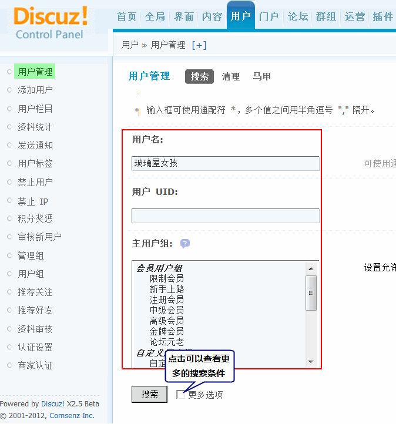如果想搜索多个用户名，可以用半角逗号 ”,” 隔开。
填写好搜索条件后，点击”搜索“按钮，将会列出所有符合条件的用户。（如果什么都不填，将会列出所有用户）
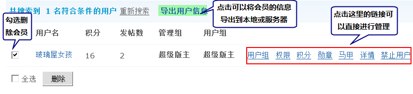勾选左侧的复选框，然后点击”提交“按钮可删除选中的用户。右边管理功能如下：
1、用户组
点击”用户组“链接，即可跳转到用户组编辑页面。如图：
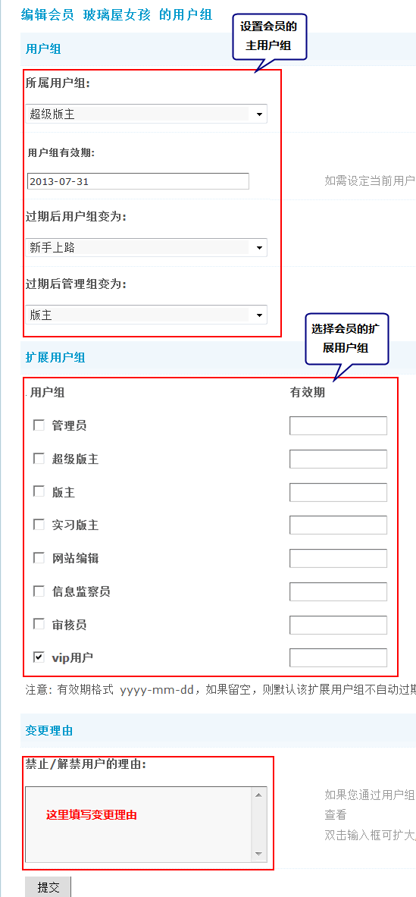用户组分为主用户组和扩展用户组，会员在网站上的权限是以主用户组为准，同时通过扩展用户组，延伸会员在特殊版块的权限,如:浏览，发新话题，发表回复，下载/查看附件，上传附件/图片等权限。
举个例子说明一下：
论坛上有一个”VIP 专版“，只有”VIP 用户”这个特殊用户组的会员才能访问和发帖，而用户 A 是”板块1“的版主。
如果要让用户A既能管理”板块1“，又能访问”VIP专版“，就需要将用户 A 的主用户组设置为”版主“，扩展用户组设置为”VIP 用户“组。
其他情况也以此类推，通过扩展用户组方式实现会员的多权限、多身份。
注：只有系统用户组和特殊用户组才会在扩展设置中列出。如果想知道自己的扩展用户组可以在如下图的位置查看
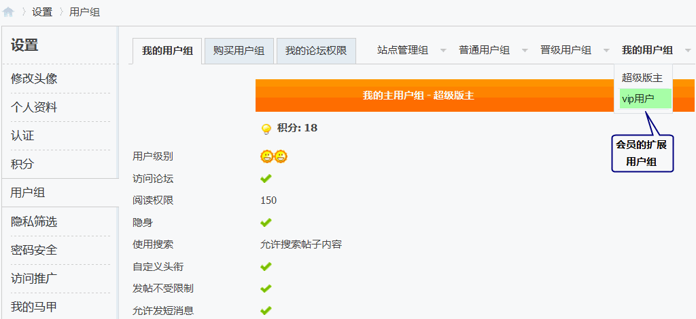设置用户组后，点击“提交”即可生效。
2、用户权限
点击“权限”链接，如图：
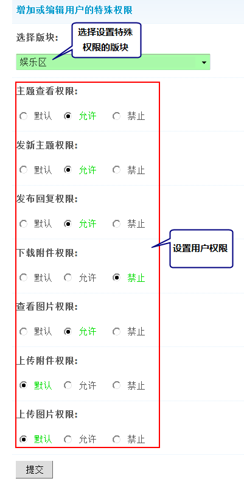这里可以设置用户的特殊权限，作用类似扩展权限设置，扩展会员在论坛版块的浏览，发表和回复主题，下载/查看附件，上传附件/图片等权限。和设置扩展用户组不同的是：这里针对当前用户，而不是整个用户组。
注：“主题查看权限”是基本权限，如果禁止此项，其他权限将会自动禁止。
提交后，用户的特殊权限将在上面显示出来：
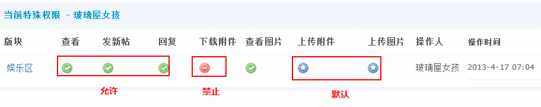说明：
用户在版块中的权限是基于用户和站点间的权限设定，如果设置为非默认状态，将不受用户组的设定限制。
删除某个用户在某版块的特殊权限设置，您只需要将他在这个版块中的权限全部设置为默认即可。
3、积分
点击“积分”链接，即可对用户的积分进行设置。如图：
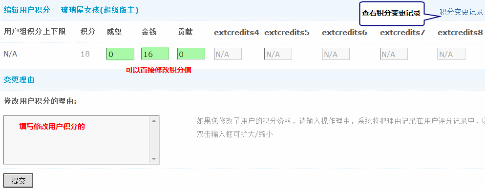这里可以直接修改用户的积分数，点击“提交”即可生效。
说明：
Discuz! 支持开启 8 种扩展积分的设置，只有被启用的积分才允许在这里进行编辑。
修改用户的某项积分会造成该用户总积分的变化，从引起普通会员等级的变化，因此请仔细设置各项积分。
如果有多人同时操作，或者操作多次积分的话，可以点击这里的“积分变更记录”查看详情。
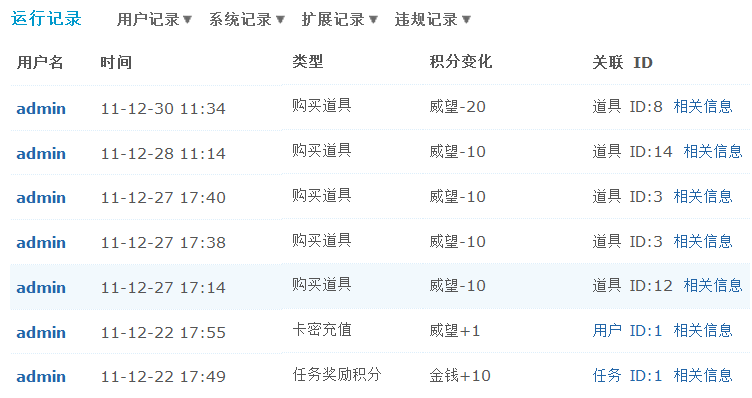4、勋章
必须是可用的勋章才可以给用户颁发，操作路径：【后台】=>【运营】=>【勋章中心】设置可用的勋章和领取方式。
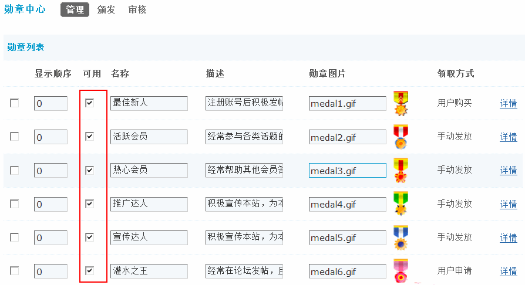设置好可用勋章后，在这里点击“勋章”，即可给该用户颁发勋章。如图
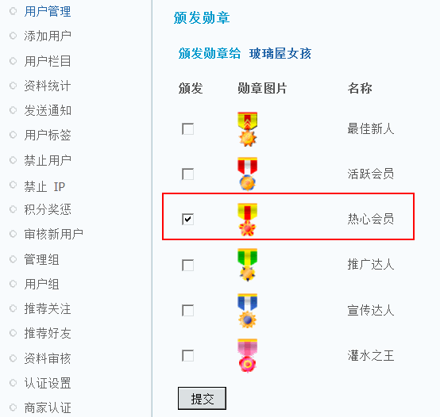勾选想要颁发给该用户的勋章，然后点击“提交”即可。
5、马甲
马甲功能必须要安装站点自带的马甲插件才可以使用，在后台安装完“我的马甲”插件以后，点击启用，如下图所示：
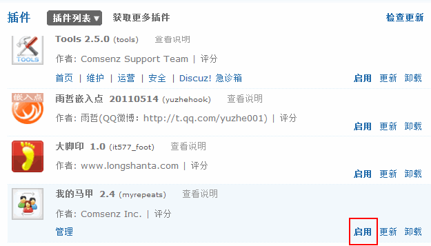设置可使用该功能的用户组，即可在前台设置“马甲”操作。
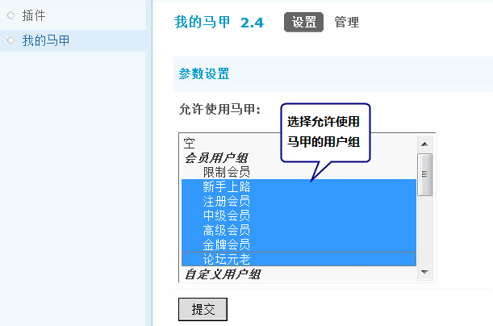马甲功能开启后，如果有会员设置了自己的马甲。
点击这里的“马甲”，会列出所有这个会员的马甲。如图：
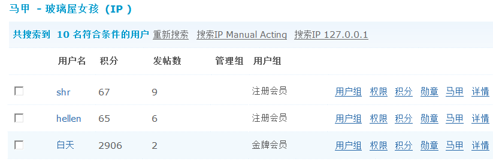勾选左侧的复选框，然后点击”提交“按钮可删除选中的马甲用户。
6、详情
点击“详情”，可以修改用户的资料。其中站长比较常用的是修改用户密码和删除违规头像。如图：
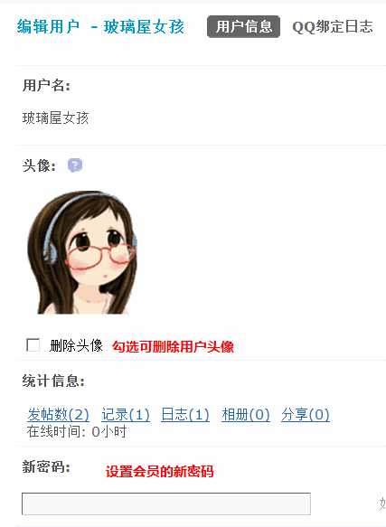除了上图中的选项外还包括清除用户安全提问、锁定用户、用户的Email地址、邮箱激活状态、发帖数、精华帖数、注册IP、注册时间、上次访问时间、上次访问IP、额外附件容量、额外好友数、时差设定、是否隐身登录、自定义头衔、签名、真实姓名、性别、出生日期、固定电话、手机号、证件号类型、证件号、邮寄地址、邮编、出生城市、居住城市、毕业学校、学历、公司、职业、职位、年收入、情感状态、交友目的、血型、支付宝帐号、QQ号、MSN帐号、阿里旺旺帐号、个人主页、自我介绍等信息。这里的信息与用户栏目设置有关，被启用的栏目都会在这里显示。
QQ绑定日志：必须开通了 Discuz!云平台后会员才可以使用 QQ互联功能，会员登录站点即可用QQ帐号进行登录，这里记录 QQ 绑定的日志信息。
7、禁止用户
点击“禁止用户”链接，可以直接禁止该用户，包括禁止发言、禁止访问、锁定用户，如下图所示：
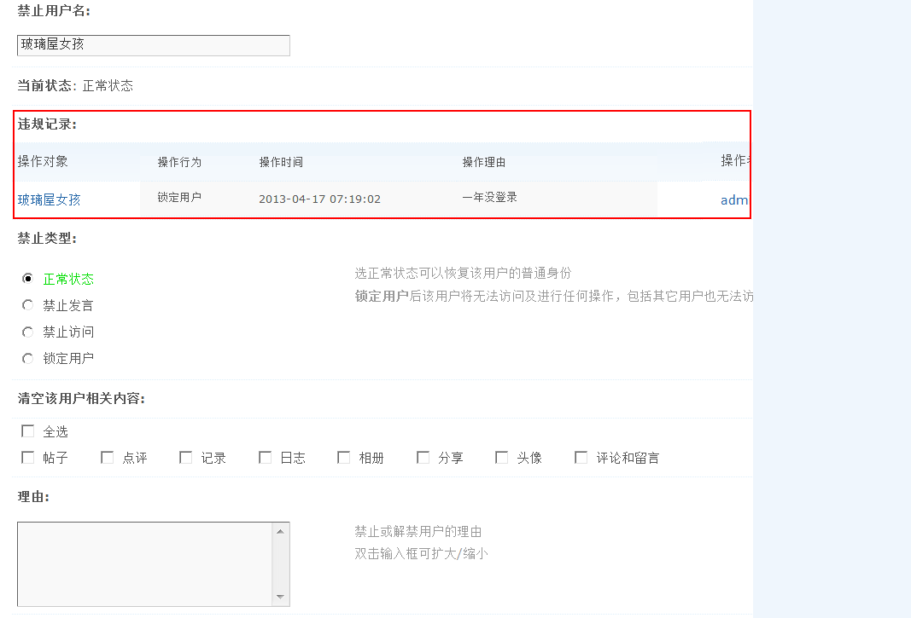禁止用户的同时可以清空该用户的相关内容，包括帖子、点评、记录、日志、相册、分享、头像、评论和留言。
这里可以把禁止的用户解禁，也可以禁止用户。
禁止类型：选择正常状态可以恢复该用户的普通身份，禁止发言后该用户将不能在站点内发表言论、如发表帖子等;禁止访问后该用户将不能访问站点;锁定用户后该用户将无法访问及进行任何操作，包括其它用户也无法访问该用户的相关信息。
禁止用户有效期：选择禁止用户的时间，在有效期过后该用户可以自动解除限制，成为普通用户。
帖子：在禁止这个用户的同时，是否删除该用户所有的主题和帖子。
点评：在禁止用户的同时，是否删除该用户发布的所有点评信息。
记录：在禁止这个用户的同时，是否删除该用户所有的记录。
日志：在禁止这个用户的同时，是否删除该用户所有的日志。
相册：在禁止这个用户的同时，是否删除该用户所有的相册。
分享：在禁止这个用户的同时，是否删除该用户所有的分享。
头像：在禁止这个用户的同时，是否删除该用户的头像。
评论和留言：在禁止这个用户的同时，是否删除该用户所有的评论和留言。
理由：填写禁止或解禁用户的理由。
同时这里还会详细记录该用户的违规记录，以便管理人员查看。
8、导出用户信息
最多支持 10000 条数据。导出的 .xls 文件可用 EXCEL 打开。
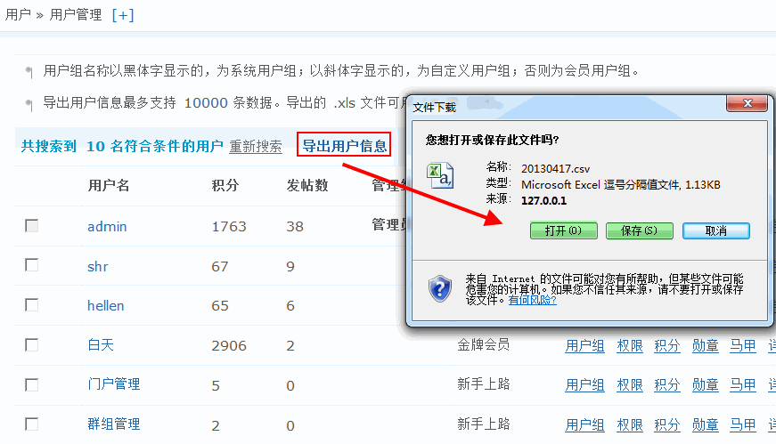可以直接打开，也可以保存到本地。
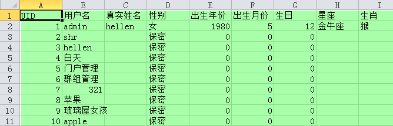二、清理用户
站长可以设置查找条件，批量删除符合条件的用户。还可以选择是否在删除用户帐号的同时，删除用户发帖和 UCenter 中的用户资料。
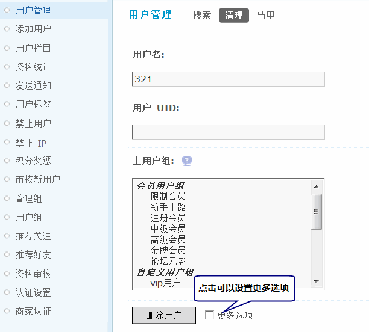设置好搜索条件，点击“删除用户”按钮，将显示符合条件用户的个数。如图：
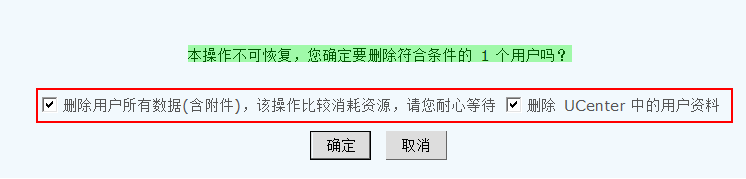勾选“删除用户所有数据（含附件）”：在删除该用户的同时，也会删除该用户曾经发过的帖子、日志、相册等所有的数据。该操作比较费时，请耐心等待。
勾选“删除 UCenter 中的用户资料”：在删除该用户的同时，也删除 UCenter 中的资料。
最后，点击“确定”，批量删除用户。
三、马甲
什么是马甲呢？即一人注册多个用户名，并且以不同身份活跃于社区里，满足多重角色扮演的需求。
用户名：可以搜索出该用户名都有哪些马甲；
用户UID：可以搜索出该 UID 下有哪些马甲；
IP 地址：可以搜索出该 IP 地址下有哪些马甲；
设置好后，点击“提交”按钮后，就会列出符合条件的会员列表并列出了马甲帐号的信息，可以按照会员管理中介绍的方法进行管理操作。
如果要删除，请勾选用户名前的复选框，然后点击下面的“提交”按钮即可删除马甲帐号。